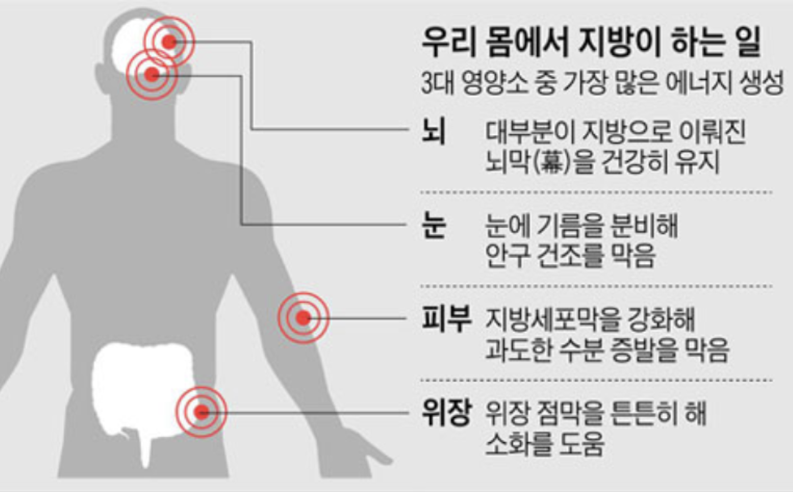
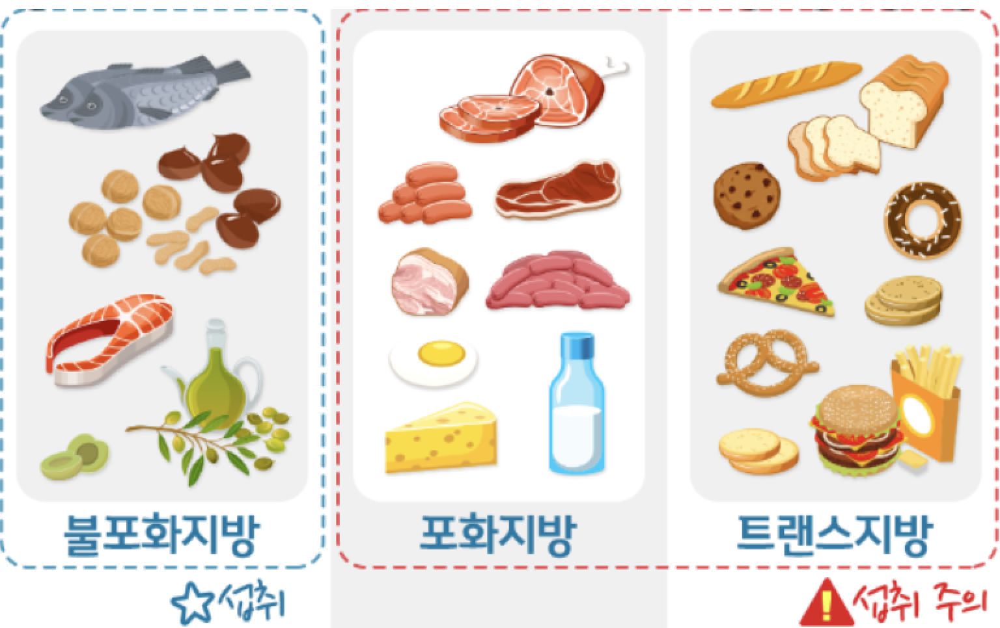
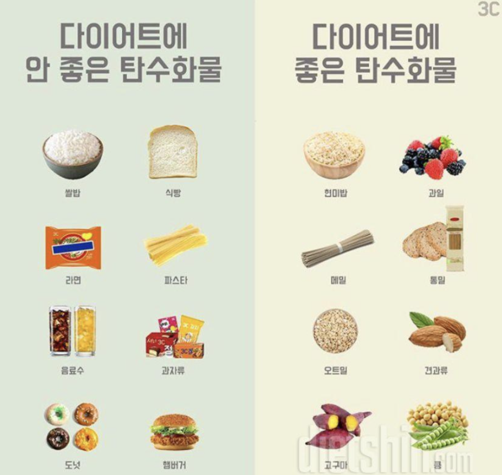
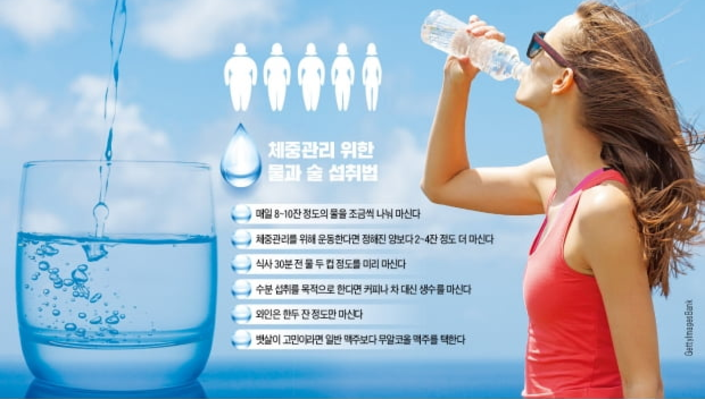

1-1. 다이어트시 지방은 무조건 피해야한다?
많은 분들이 다이어트시 지방을 섭취하면 안되며 무조건 적으로 지방은 피해야한다고 잘못알고 계신분들이 많은데 지방은 같은량 대비 탄수화물과 단백질의 2배의 에너지 효율을
내는 우리몸을 움직이는데 꼭 필요한 훌륭한 에너지원이며, 우리 몸에 형성된 피부 밑에 있는 피하지방/체지방은 체온을 유지하고 장기를 외부 충격으로부터 보호하는 등의 역할을 수행하며,
우리 신체에 적절한 대사기능을 위한 에너지를 공급할 뿐만 앙니라 근육을 만들고 유지하는데 도움을 주는 지용성 비타민 A,D,E 그리고 비타민K가 신체에 흡수될 수 있도록 하는 역할을
수행합니다. 또한 우리 몸에 혈관 벽을 이루고 몸속에 여러 기관을 보호하는 등 매우 중요한 역할을 하는 영양소가 바로 지방입니다.

오히려 한국인들의 주식인 밥과 많은 사람들이 좋아하는 빵,면 등에 많이 포함되어있는 탄수화물이 과잉섭취를 하게 되면 탄수화물 과잉으로 이어져
내몸에서 사용하고 남은 잉여 에너지들은 피하(피부 밑)지방 혹은 내장 지방으로 축적되게 되는데, 비만의 주 원인은 지방이 아니라 오히려 탄수화물을 많이
섭취하여 나타나느게 대부분이다. 그렇기 때문에 오히려 다이어트시 섭취를 조절해야할 영양소는 지방이 아니라 탄수화물이다.
그렇다면 지방을 어떻게 섭취하는게 좋은가하면, 우리가 식품으로 섭취하는 지방을 간략하게 나눠보자면,
상온에서 굳는 포화지방과 유동성이 있는 불포화지방, 인공적으로 만들어진 트랜스지방으로 분류할 수 있습니다.
이 중 포화지방과 트랜스 지방은 혈관질환을 유발하니 되도록 피해주고, 불포화 지방을 위주로 적절한 지방 섭취를 권장합니다.

1-2. 그러면 탄수화물은 탄수화물의 주된 적이니 먹지마 ?
저탄수화물 식단이 체중 감량에 도움이 되는 것인 사실입니다. 많은 경우에 있어서 고단백 저탄수화물 식단을 유지한다면, 칼로리 제한을 하지 않고도 체중을 줄일 수 있습니다.
하지만, 꼭 탄수화물을 피할 필요는 없으며, 적당량의 탄수화물 섭취는 필요하기도 합니다. 이 때 중요한 것은 어떤 경로를 통해 탄수화물을 섭취하는가 입니다.
통곡을 통한 탄수화물 섭취입니다. 흰 쌀밥, 정제된 밀가루 음식을 피하고, 현미 혹은 통곡 음식을 먹도록 합니다.
- 지방도 탄수화물도 조절이 필요한건 맞지만, 꼭 필요한 영양소이며 같은 영양소라도 좋은 영양급원으로 적절하게 섭취해줘야한다.

2. 나의 적정 체중은 얼마일까?
다이어트를 할 때 현재 나의 몸무게를 알고, 적정 체중은 얼마인지를 알아야 합니다.
그리고 한달에 몇키로를 감량할지에 대한 목표치를 세우고 접근하는 것을 추천 드립니다.
참고로 남자와 여자는 적정체중 계산하는 방법이 다르다는 점 말씀드립니다.
여자 표준 체중 – 키(m) x 키(m) x 21
남자 표준 체중 – 키(m) x 키(m) x 22
남자와 여자 모두 표준 체중을 계산하려면 단위를 미터로 환산해야 합니다. 예를들어 키가 170cm라면 1.7m가 되겠습니다.
즉 여자를 기준으로 계산을 해보면 1.7 x 1.7 x 21 = 60.69kg이 되는 것 입니다.
3. 다이어트를 위해 칼로리를 얼마나 섭취해야 할까?
- 표준체중 x 25~30(kcal/일)
이제 본인의 적정 체중을 알았으니 다이어트를 하기 위해 하루 필요 칼로리가 어느정도인지 알아야 합니다. 그래야 칼로리에 맞춰 식단을 짤 수 있으니까요.
하루 섭취 칼로리를 계산하려면 본인의 하루 활동량에 대해 알아야 합니다.
참고로 활동대사량은 계산법을 통해 유추하는 것이지 백퍼센트 맞출 수는 없습니다. 계산을 통해 대략적인 기준을 잡고, 칼로리에 맞춰 식단을 짜면 됩니다.
그리고 다이어트를 진행해 보고 살이 빠진다면 내가 잡은 활동대사량이 적절한 것이라고 생각하시면 됩니다.
물론 너무 급격하게 체중변화가 온다면 활동대사량에 비해 섭취하는 칼로리가 너무 적다고 생각하시면 됩니다.
그렇게 되면 근손실이 많이 발생하여 체지방 보다는 근육이 많이 빠지게 되어 나중에 식단을 일반식으로 변경했을 때 요요현상이 올 수 있습니다.
4. 유명인들은 다들 먹는다는 다이어트 보조제는 필수? 정말 좋은가?
다이어트 관련 산업은 매우 커다란 산업입니다. 수많은 회사에서 셀 수 없을 만큼 많은 종류의 다이어트 보조제를 팔고 있습니다. 그렇지만, 대부분의 다이어트 보조제는 효과가 없거나,
극히 일부의 사람들에게서만 효과를 나타내며, 그마저도 대부분은 위약효과(placebo effect)입니다. 만약, 운동이나 식이 조절만으로 체중 감량이 힘들어
보조제를 먹어야 겠다고 생각한다면, 효과가 입증된 다이어트약(비만치료제)을 의사의 처방하에 복용하는 것이 낫습니다.
5. 건강을 해치지않고 살을 빼려면 아침을 꼭 챙겨 먹어야 한다 ?
아침 식사를 하는 사람들보다 아침 식사를 거르는 사람들이 몸무게가 더 나간다고 합니다. 하지만, 이는 아침 식사 자체의 영향보다는 아침 식사를 하는 사람들이 대체적으로 좀 더 바람식한 생활 습관을 갖고 있기 때문입니다. 보다 더 과학적인 연구들에 의하면, 아침 식사를 하느냐 마느냐는 실제 체중과 건강에 미치는 영향이 거의 없었습니다.
마찬가지로, 적은 식사량으로 하루 여러번 식사를 하는 것이 체중감량에 좋다는 것도 잘못된 다이어트 상식입니다.
6. 물만 먹어도 살이 찌는 체질이 있다?

물은 0kcal로 열량이 없어서 아무리 마신다고 해도 살이 찌지 않습니다. 오히려 물은 신진대사를 활발하게 해 체중 감량에 도움을 준다고 해요.
물을 많이 마실 경우 물만큼 체중이 늘 수는 있지만 땀, 소변 등으로 배출되기 때문에 몸속 지방은 늘어나지 않는답니다.
하지만 과도한 물 섭취는 질환으로 이어질 수 있으니 무엇이든 적당한 게 좋다는 말을 기억해야 합니다.
7. 간식이 먹고싶을때, 과일은 마음껏 먹어도 살이 괜찮나요 ?

과일에는 단맛을 내는 과당(Fructose) 성분이 들어있습니다. 이 성분은 과일 속에 주로 포함된 단당류로 프룩토오스(fructose)라는 명칭도 과일(fruit)에서 비롯되었다고 합니다.
많은 사람들이 이 과당을 ‘비만의 원인’ ‘만성질환의 주범’으로 알고 있는데요. 과당 섭취가 혈중 중성지방 농도를 높이고 비만과 당뇨 유병률을 증가시킨다는 연구 결과가 발표됐기 때문입니다.
하지만 이런 연구에는 실제 우리가 섭취하는 과일의 양보다 3~4배 이상, 심지어 동물 실험의 경우 5~6배 이상 많은 과당을 사용했기 때문에 이를 우리 일상에 그대로 적용하는 것에는
무리가 있다는 지적이 있습니다. 실제 캐나다 세인트 미셀 병원 연구팀이 발표한 과당 섭취와 체중 관련 연구에서는 전체 열량을 고정해놓고 다른 탄수화물 대신 과당을 섭취했을 때는
체중이 증가하지 않았지만 다른 칼로리를 줄이지 않고 추가로 과당을 섭취하면 체중이 증가했습니다.
즉, 주로 식사를 한후 과일을 주로 섭취하는데 이처럼 적정 칼로리 안에서 과당을 섭취하는 것이 아니라 적정 칼로리를 이미 섭취한 상태에서 과당을 추가로 섭취하면 체중이 증가한다는 것입니다.
따라서 무작정 사탕, 과자 등과 차별을 두지말고, 조절하고 있는 탄수화물량에 맞춰 적절하게 섭취를 해줘한다.